Students reached across Egypt and GCC
Operations Manager at Pyramakerz Technologies
I turn STEAM operations into smart systems.
Mechanical Engineer and operations leader building practical systems for schools, events, logistics, fabrication labs, inventory, finance flows and cross-functional delivery.
Abdullah EL-Sayed Mohamed
Mechanical Engineer / Senior Operations
0%Missed chaos
360°Ops visibility
LiveWorkflow tracking
About
Operations leadership with engineering discipline.
I combine mechanical power engineering with real-world operations: school deployments, STEAM education support, event planning, technical training, product preparation, shipping, export research, 3D printing and CNC laser operations.
My focus is simple: make every operation visible, measurable, repeatable and fast enough for teams to act without friction.
Now
Operations Manager
Pyramakerz Technologies - operations, execution, ERP systems and delivery visibility.
2024 - 2025
Senior Operations Supervisor
Streamlined workflows, managed logistics, supported schools and operated advanced fabrication machines.
Feb - Sep 2024
Junior Operations Specialist
Events, teacher support, curriculum operations, product preparation and export research.
3 Years
Reserve Officer - Egyptian Armed Forces
Served as a reserve officer and worked in vehicle maintenance, gaining hands-on experience in troubleshooting, maintenance planning and fleet readiness.
2015 - 2020
B.Sc. Mechanical Power Engineering
Faculty of Engineering, Alexandria University. Graduation project: water mist firefighting system - team leader.
Impact matrix
Operating inside a high-growth STEAM ecosystem.
The numbers below reflect the Pyramakerz ecosystem and the operational environment I help execute and improve.
Training hours delivered
Educational institutions
Years of EdTech execution
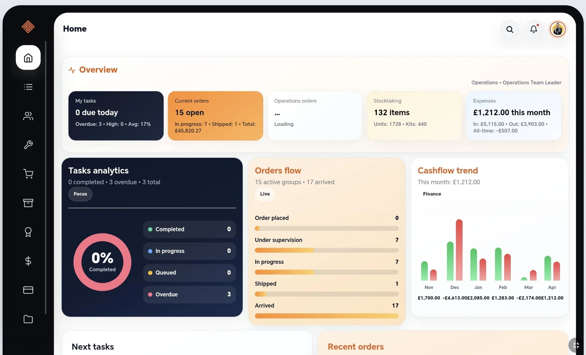
Command center
A dashboard mindset for every operation.
From orders and stocktaking to tasks, expenses and B2B folders, the operations app turns fragmented work into one live workflow.
Live order tracking
Inventory visibility
Expenses settlement
Tasks board
ERP systems
Internal operations systems built for speed and control.
Screens from the operations ERP apps: dashboard, orders, supervision flow, stocktaking, finance, B2B folders and tasks.
01
Operations Overview
Tasks, orders flow, stocktaking and cashflow in one command view.
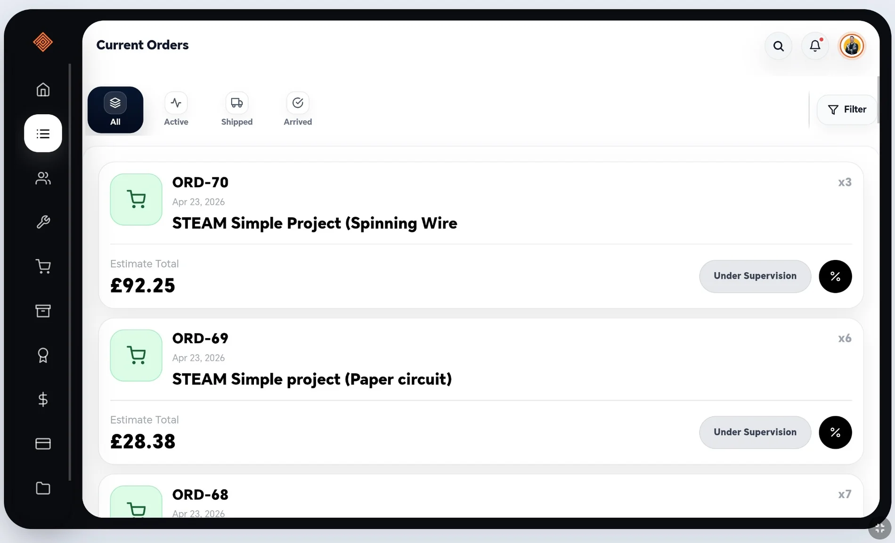
02
Current Orders
Filtered order states with totals, quantities and supervision status.
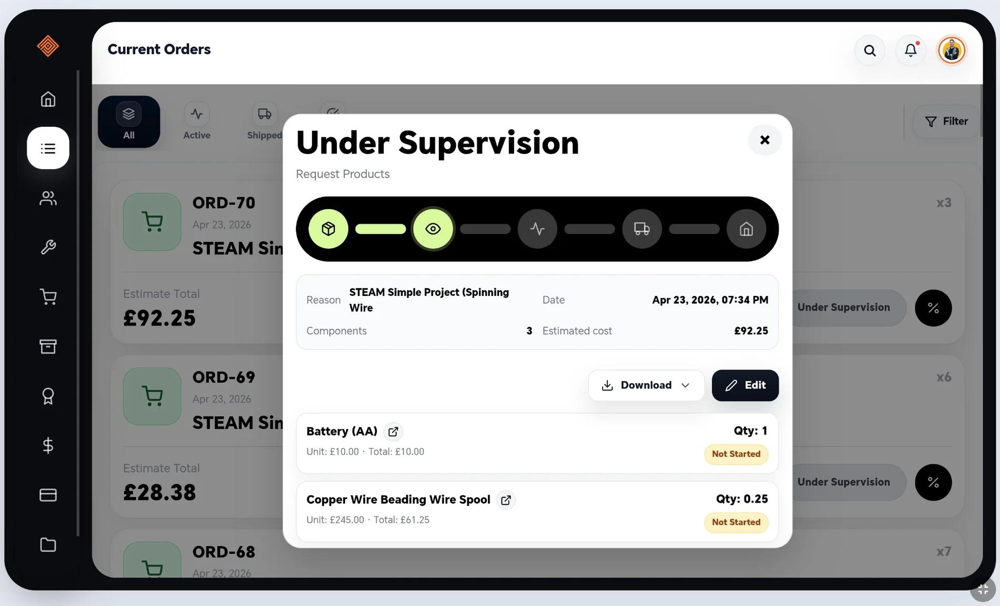
03
Supervision Flow
Step-by-step request tracking with component status and cost.
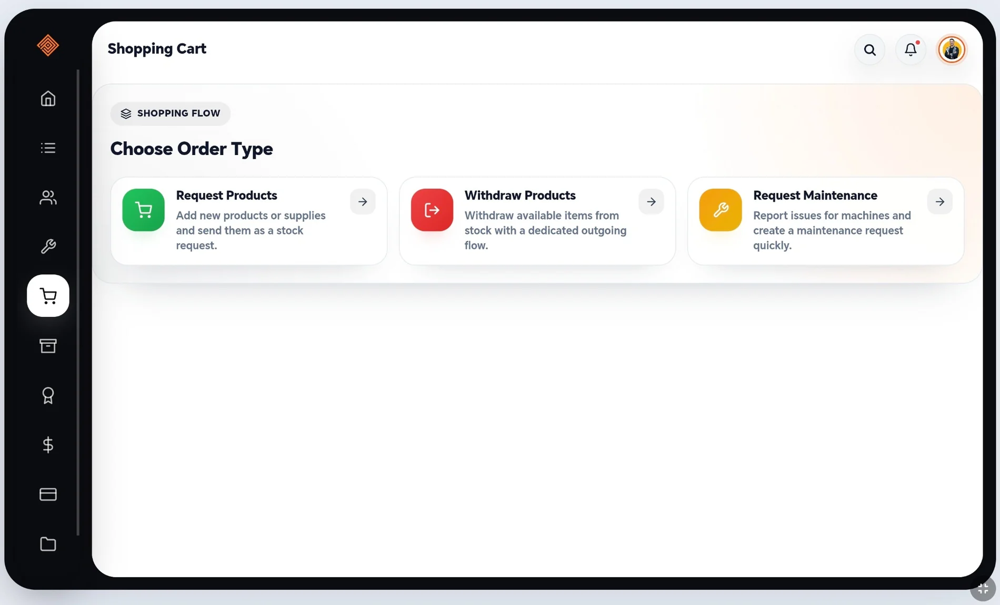
04
Request Flow
Request products, withdraw products or maintenance requests.
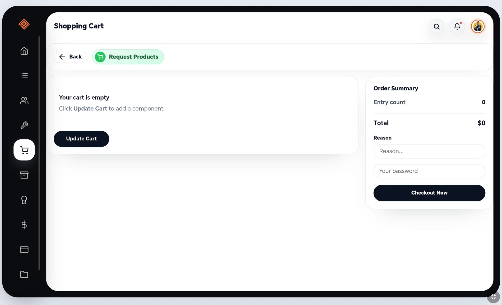
05
Cart & Checkout
Reason, password and checkout workflow for controlled requests.
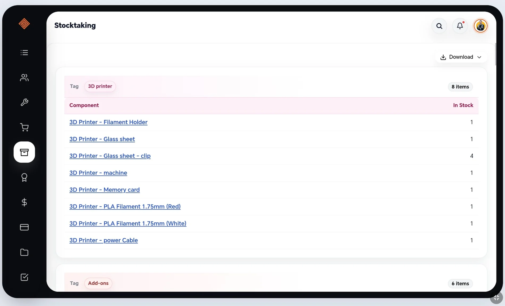
06
Stocktaking
Grouped components by tags with item counts and stock availability.
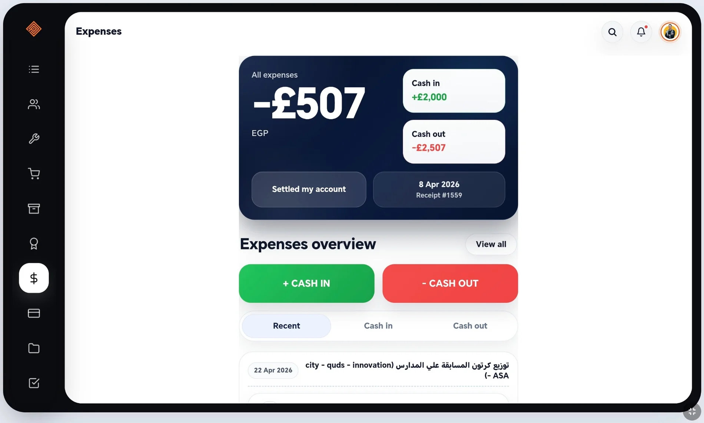
07
Expenses
Cash in, cash out, recent records and settlement history.
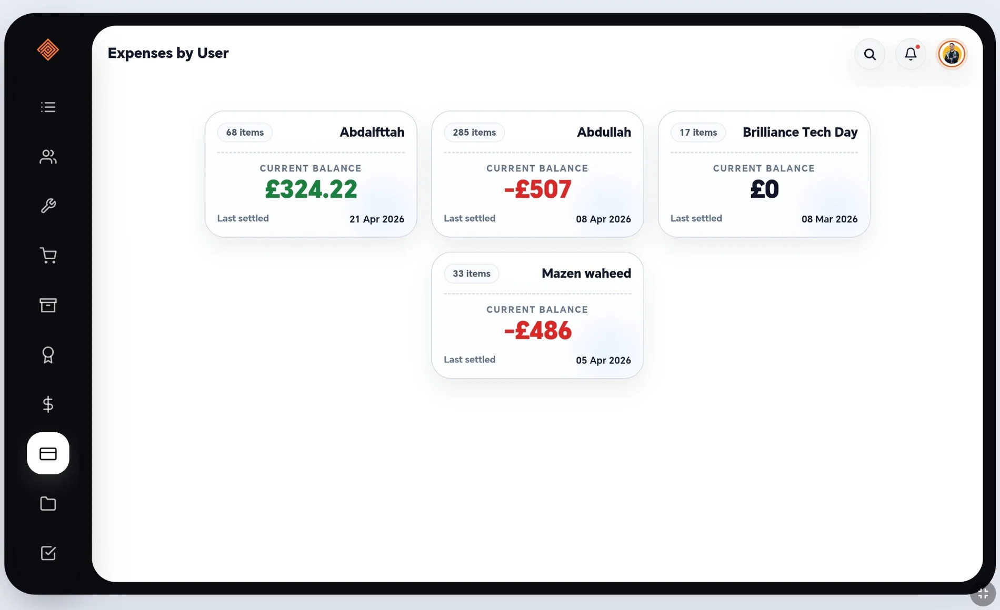
08
User Balances
Expense ownership, current balances and settlement dates.
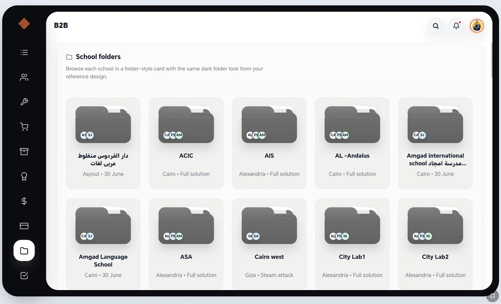
09
B2B School Folders
Folder-style school cards for delivery and relationship tracking.
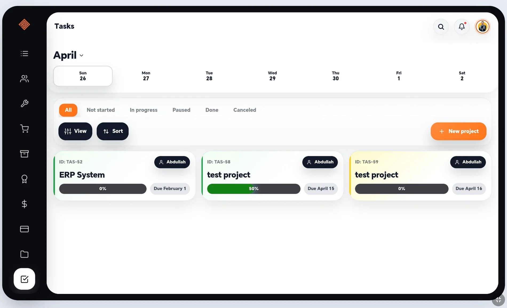
10
Tasks Board
Calendar filtering, progress bars, ownership and due dates.
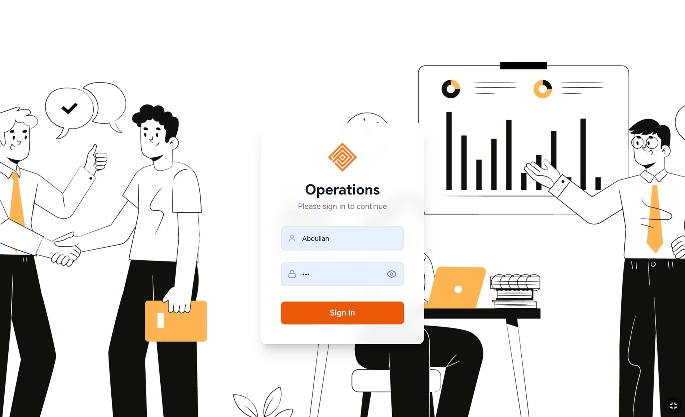
11
Operations App
Branded access point for the operations system.
Event execution
Selected static previews from Tech Days, labs, meetings and training.
Each card uses a static local preview image so every post is always visible inside the portfolio. Click any preview to open the original Facebook link.
Operating model
How I convert chaos into a controlled workflow.
Map the flow
Define request types, owners, inputs, dependencies and decision points.
Digitize control
Turn the process into forms, dashboards, role access, tracking states and live KPIs.
Execute on ground
Prepare components, machines, teams, logistics, venue details and school support.
Measure and improve
Read bottlenecks, improve cycle time, track cost and keep teams aligned.
Skills stack
A hybrid skillset across operations, engineering and technology.
LeadershipProblem SolvingCross-functional CollaborationLogisticsInternational TradeEvent PlanningSTEAM Education Systems3D Printing / CuraCNC Laser / LightBurnMechatronicsArduino IDEAutoCADSOLIDWORKSMATLABWaterGEMSNotionMondayFilloutMicrosoft Office
Contact
Let us build the next operations system.
Available for operations leadership, STEAM deployment, ERP workflows, event execution and technical operation projects.